- Eclipse Ganymede 3.4 (with WTP installed)
- Maven 2.2.x
- Eclipse Maven plugin
- SubClipse-1.6.x, Team Provider plug-in providing support for Subversion within the Eclipse IDE
- JBoss Tools 3
- Jboss 4.2.3.GA Application Server
Use the seam-refimpl Project as a Template for Your Own Project
Import Maven project to Eclipse
To import a mavenized project to Eclipse (i.e. a project that is already installed on your computer), follow these steps:
- Create a workspace in eclipse (do not use same folder as
${SEAM_REFIMPL}) - Create a WTP server reference (that references the installed JBoss application server), the JBoss Seam documentation explains how to Create a WTP server reference
- Exit eclipse, navigate to the project folder using a command shell and execute Maven command:
mvn clean install - Execute Maven command:
mvn eclipse:clean - Execute Maven command:
mvn eclipse:m2eclipsefrom the command shell
Note:mvn eclipse:eclipsedoes not work! - Open Eclipse and import the
seam-refimplproject into your Eclipse workspace 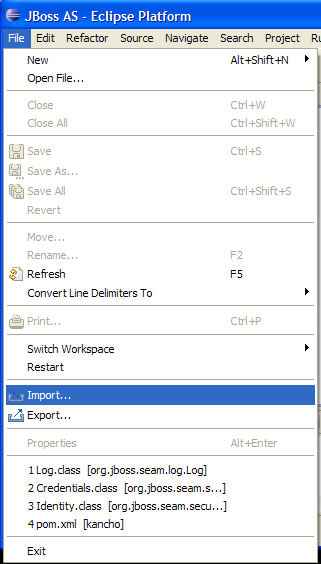
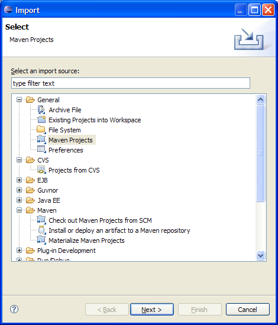
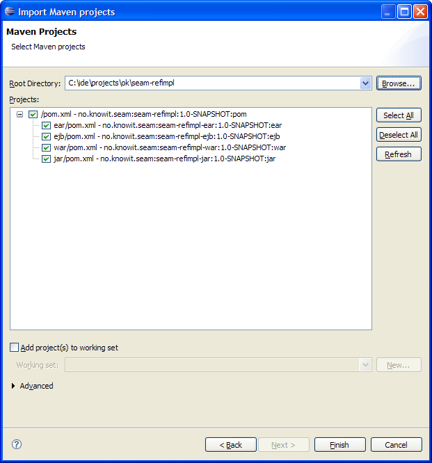
If the SubClipse plugin is configured corretly and the project was previously checked out from svn (using tortoise or a similar tool), then the project should already be under revision control inside Eclipse. If the project does not apear to be under revision control then select all seam-refimpl projects, rightclick and selectTeam > Share Project...to get the project under revision control. 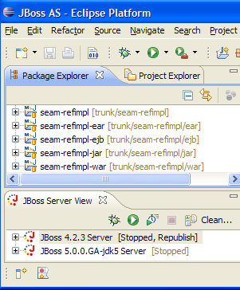
- Right click on the configured JBoss Server and select Add and Remove Projects...
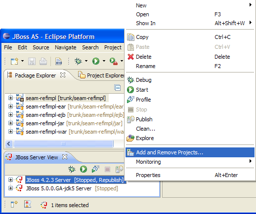
- Select the seam-refimpl-ear project and click Add
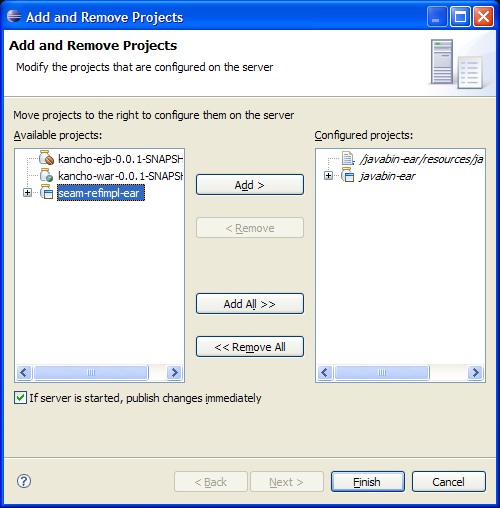
- Start the server
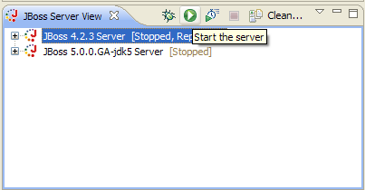
- Open a browser and enter the URL http://localhost:8080/seam-refimpl
Checkout a Maven project to Eclipse from SCM
- Select File > New > Other...
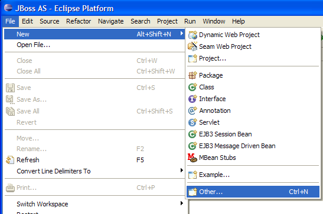
- Select Checkout Maven Projects from SCM
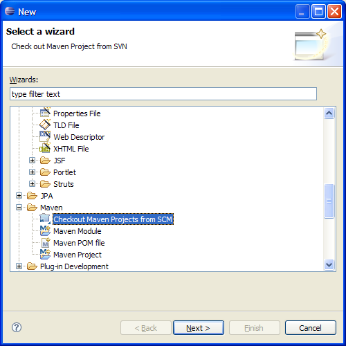


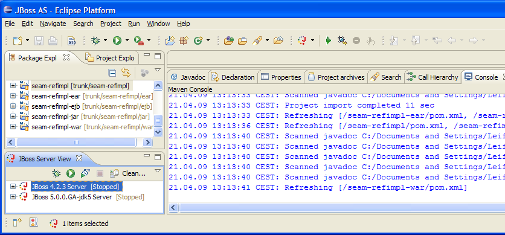
- Exit eclipse, navigate to the project folder using a command shell and execute Maven command:
mvn eclipse:m2eclipse
Note:mvn eclipse:eclipsedoes not work!
Note ii: Maybe this step is redundant? - Open Eclipse again and right click on the configured JBoss Server and select Add and Remove Projects...
- Select the seam-refimpl-ear project and click Add
- Start the server
-
Open a command shell and run
mvn clean package -Pexplode
This is IMPORTANT because JBoss Tools clutters up the exploded view. -
The exploded view on your
${JBOSS_DEPLOY}folder should look like this: 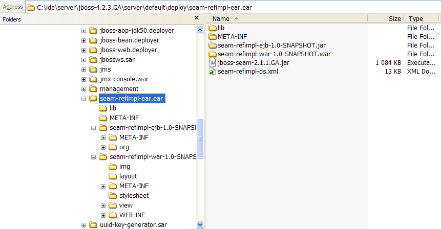
- Open a browser and enter the URL http://localhost:8080/seam-refimpl
After logging in, your welcome screen should look like this: 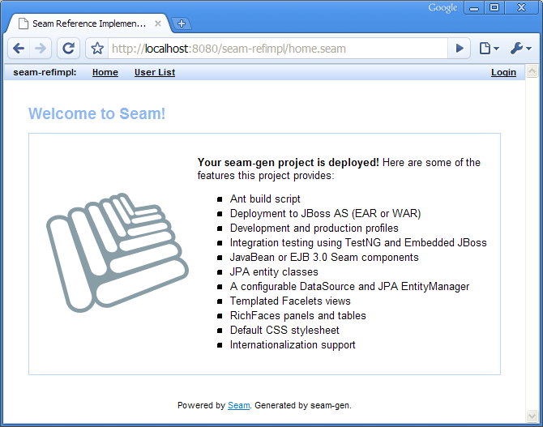
m2eclipse issues
There is a problem with running mvn install from eclipse, see:
http://www-02.imixs.com:8081/roller/ralphsjavablog/entry/eclipse_maven_install_from_runas
Tips for debugging
When your application starts up it will print all components being created (Seam and your own) and the context they are placed in. Validate that your new component is displayed as well.
Seam has a debug page showing useful information. To use it, add the following dependency to your war pom.xml:
<dependency>
<groupId>org.jboss.seam</groupId>
<artifactId>jboss-seam-debug</artifactId>
<version>${jboss.seam.version}</version>
</dependency>
In the components.xml activate the debug mode.
<core:init transaction-management-enabled="false" debug="true"/>
Open your browser and point to the following URL to see the debug page. http://localhost:8080/seam-refimpl/debug.seam